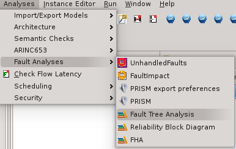
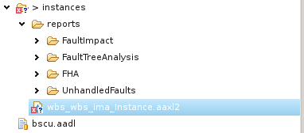

The goal of the Fault Impact Analysis is to trace the error paths between the error source and the impacted component. Used with the Functional Hazard Assessment, it is a valuable information for evaluating the system safety.
To use the function, select the system instance file and click on the FaultImpact menu item in the Safety Analysis menu, as shown below.
It then produce a CSV file that can be imported within Excel and contains all the error path within the architecture.
The Fault Impact Analysis then retrieves all components that have outgoing error propagations and get all error paths starting from each of them. Then, it logs all the components across the error path so that users can check the potential impacts from a fault occurring in that component.